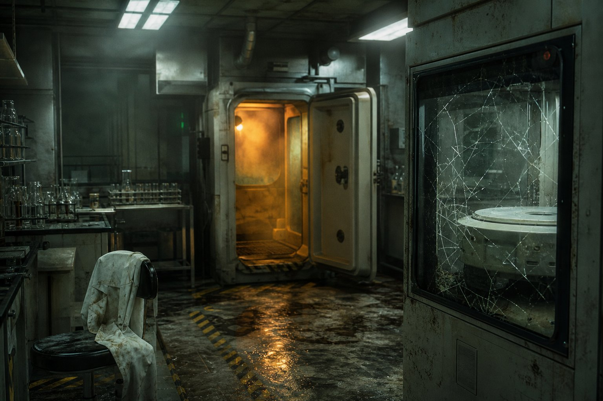

1. Le principe
Zombie Research est la progression hors raid dédiée à la contamination. Pendant une raid en Infected Zone, vous récupérez des échantillons zombies. Une fois extraits — un échantillon non extrait ne compte pas — vous les consommez pour activer et améliorer des points de recherche.
Les capacités ainsi débloquées restent permanentes en Infected Zone, pour toute la durée de la saison. C'est ce qui donne à chaque raid infecté une vraie valeur : le loot est éphémère, la recherche est un actif durable.
La règle qui fait paniquer les pressés
Un point de recherche activé ne peut pas être remis à zéro. Les lignes qui relient les points indiquent leurs relations d'activation : si un point a plusieurs prérequis, un seul suffit pour le débloquer. Il n'y a donc pas de « mauvaise branche » — mais il y a un ordre qui compte, et il est définitif.
2. Où trouver les échantillons
- Uniquement en Infected Zone (Farm, Valley, Airport). Le Zombie Endless et No Man's Land servent à l'entraînement, la source de samples est la zone contaminée elle-même.
- Sacs de zombies (body bags) : les corps infectés abattus ont une chance de laisser un sac et des objets zombies.
- Coffres et mini-coffres : ils peuvent contenir des échantillons zombies en plus du loot habituel. Si vous êtes déjà dans un bâtiment qui en abrite un, il n'y a aucune raison de passer devant — c'est du loot et de la recherche pour le même prix.
- Conteneurs exclusifs zombies : conteneurs d'expédition, distributeurs abandonnés, caisses à indices huileuses — plus d'objets zombies que les conteneurs classiques.
- Missions in-raid exclusives : les compléter rapporte des récompenses de caisses de loot, avec de quoi accélérer la recherche.
Ne gaspillez pas vos munitions sur du menu
Chaque tir inutile est une entrée dans un combat que vous n'aviez pas à livrer. La communauté le formule ainsi : « le bruit est une ressource ». Réservez les tirs aux Opérateurs, aux mutants dangereux, aux zombies qui bloquent votre route et à la protection de votre extraction. Contourner un groupe en silence est souvent meilleur que le nettoyer au prix de 30 balles.
3. L'arbre de recherche
| Élément | Règle | Conséquence pratique |
|---|---|---|
| Point de recherche | Consomme des échantillons pour être activé | Votre stock d'échantillons est votre vraie monnaie |
| Prérequis | Plusieurs prérequis possibles, un seul suffit | Pas de verrou linearity : plusieurs chemins valides |
| Amélioration | Un point activé peut être amélioré avec des échantillons supplémentaires | Les premiers points doivent être choisis avec soin |
| Capacité | Effective en Infected Zone de façon permanente | Un point bien choisi vaut 3 raids |
| Reset | Impossible | Ne «Bidules » rien au hasard pour « tester » |
Les sept passifs de l'arbre, un par un
L'arbre n'affiche pas que des nombres : sept de ses branches ont un nom et un effet identifiable. Ce sont eux qui décident de la forme d'un raid, pas le level up générique.
| Passive | Ce qu'elle change | Priorité |
|---|---|---|
| Melee Mastery | Augmente les dégâts de corps à corps contre les zombies. Permet de les eliminer en silence, sans gaspiller de munitions. | Élevée — en raid où vous avez marqué des munitions T5, chaque balle zombie gaspillée se compte. |
| Undying Spirit | Rend une partie de votre endurance à chaque zombie tué. Vous nettoyez une horde sans être à sec. | Moyenne — se combine naturellement avec Melee Mastery. |
| Pain Killer | Réduit les dégâts subis des zombies. Les zombies qui bondissent et crachent vident la barre de vie très vite : ici, vous ne prenez presque rien. | Élevée en Heavy Infected Zone. |
| Sustained Combat | Tuer des zombies rend une partie de votre santé manquante. Se battre contre de grandes hordes finit toujours par faire mal : cette branche compense avant que le médical ne prenne le relais. | Moyenne. |
| Sample Identification | Augmente directement vos chances de trouver des objets rouges dans les conteneurs zombies. | La première à débloquer si votre objectif est le revenu. |
| Vending Machine Hunter | Ajoute une chance que les distributeurs lâchent des objets de valeur. Les machines ne servent qu'au premier joueur qui les utilise : c'est un passif de vitesse, pas de farm. | Élevée si vous ouvrez les distributeurs en premier. |
| Hyper Intuition | Vous permet de voir les traces de mutation sur la carte. En les suivant, vous menez aux récompenses cachées. | Élevée — c'est la clé des bio-échantillons. |
Source : base de référence communautaire, guide loot et progression S7 (abibuilder.com/guides/s7-loot-guide). Donnée documentée, non publiée par l'éditeur.
L'échantillon Gold garanti
Les échantillons zombies se trouvent dans les coffres zombies, les conteneurs zombies et les Flesh Growths (croûtes de chair qui poussent sur les murs et le sol). Mais il y a une source garantie : descendre le boss d'Airport garantit un échantillon de niveau Gold. C'est le seul point du jeu où le loot facial est garanti, et cela vaut un raid à lui seul quand on cherche à monter l'arbre vite.
4. Ordre d'investissement recommandé
La hiérarchie d'investissement découle de la logique de survie : on sécurise d'abord la survie, ensuite l'économie.
- Semaine 1 — la survie : échantillons de base, réanimation plus rapide, réduction du bruit. Tant que vous mourez en Infected Zone, la recherche avance très peu, car les échantillons non extraits sont perdus.
- Semaine 2 — l'économie : une fois les upgrades de survie installés, poussez la recherche liée au loot (valeur des conteneurs, accès aux zones à fort rendement).
- Semaine 3 — l'optimisation : dernier coup de pouce aux capacités situationnelles (détection, distance, contre-mesures).
Le calcul qui décide de tout
Un échantillon non extrait vaut zéro. Avant de spécifier une capacité, vérifiez que votre kit d'extraction est complet : sac suffisant, clé d'extractions, niveau d'agent pour la zone visée. Un point de recherche activé le dernier jour de la saison ne vaut rien.
5. La ligne de missions zombies (40 missions)
| Étape | Nombre | Nature |
|---|---|---|
| Stage 1 | 15 missions | Découverte : premiers échantillons, conteneurs, marqueurs d'objectif |
| Stage 2 | 15 missions | Exigence : objectifs denses, récompenses de caisses de loot |
| Étape indépendante | 10 missions | Ligne exclusive Zombie Endless : survie, Merit, contre-mesures |
- Les récompenses de caisses se débloquent en terminant les missions in-raid exclusives.
- Terminer la série complète de missions zombies garantit l'Elysium, le drop rouge de la zone infectée.
- Les événements d'extermination débouchent sur des Hazmat Suit Supply Passes —ratio de conversion en fin d'événement : 1 pass = 5 000 Koen si non utilisés.
6. Les erreurs qui coûtent cher
Erreur n°1 — activer au hasard
Chaque point activé est définitif. Dépenser vos échantillons sur une branche qui ne sert pas votre style de jeu vous bloque pour le reste de la saison.
Erreur n°2 — mal extraire les échantillons
Un échantillon dans un sac non extrait n'existe pas. Les morts en zone contaminée avec le sac plein coûtent la totalité des échantillons.
Erreur n°3 — tout tuer
Nettoyer chaque groupe de zombies attire des hordes et vous signale aux squads. Contourner un groupe est souvent plus rentable que de le nettoyer.
Erreur n°4 — négliger les conteneurs
Les conteneurs exclusifs zombies (shipping, distributeurs, caisses huileuses) sont souvent les meilleurs rendements en échantillons de la carte. Ignorer ce contenu est l'erreur la plus courante.
7. FAQ
Peut-on réinitialiser un point de recherche ?
Non. Les notes officielles sont claires : un point activé reste activé.
Faut-il plusieurs prérequis pour un même point ?
Non — un seul prérequis activé suffit à débloquer le point suivant, même si l'arbre en dessine plusieurs.
Les échantillons se perdent-ils à la fin de la saison ?
La recherche zombie est liée à la saison : vos capacités restent actives pendant la Saison 7. Le nouveau système de formules de recherche (Improvement Blueprint) est lui aussi explicitement réinitialisé à chaque saison.
Où sont les conteneurs zombies ?
Ils apparaissent en Infected Zone : conteneurs d'expédition, distributeurs de boissons abandonnés et caisses à indices huileuses. Ils remplacent une partie des conteneurs classiques sur ces cartes.
Objectif de fin de semaine
Extrayez 10 échantillons lors de votre prochaine raid Valley (zone standard, la plus simple pour débuter), et réservez-les pour le premier point de survie. Vous aurez déjà 3 fois plus d'échantillons que la moyenne des joueurs qui partent en Hunt-and-Kill.